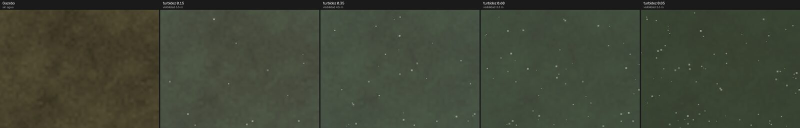
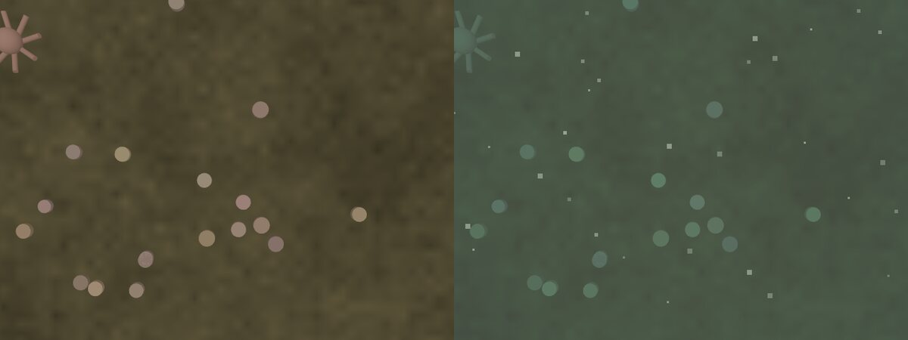
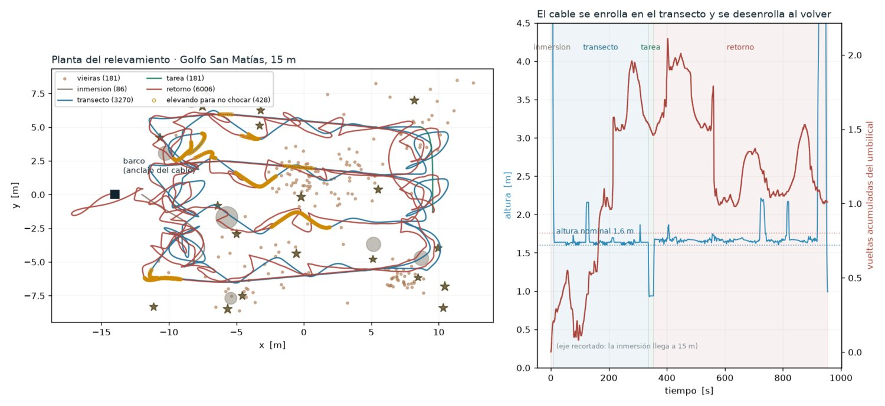
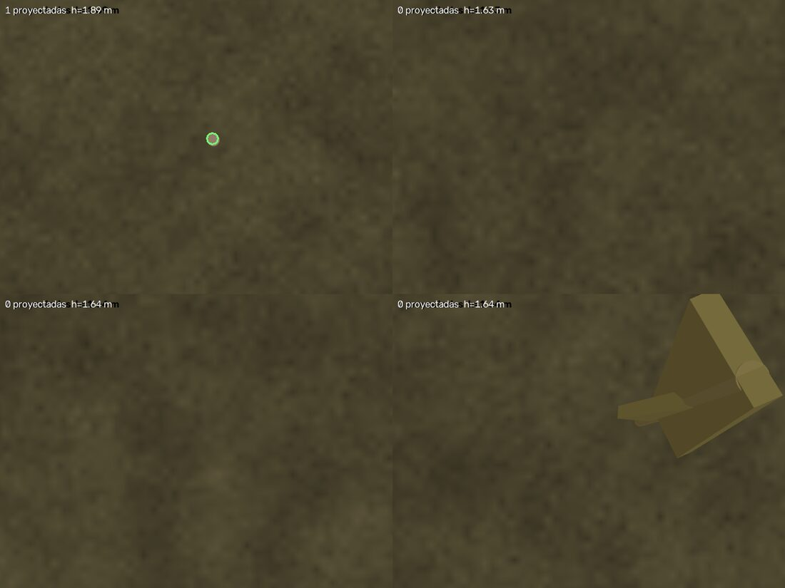
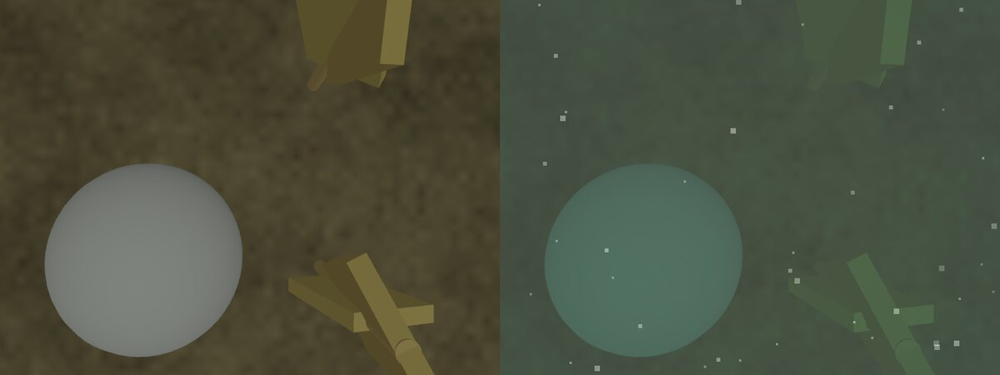
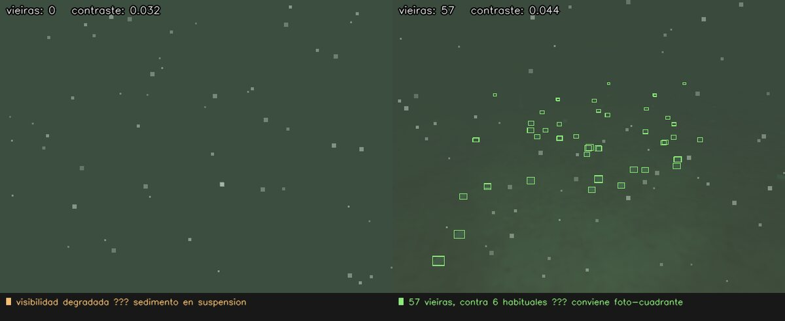

ROS 2 Jazzy · Gazebo Harmonic · BlueROV2 · YOLO26 · SAM 2.1 · SAM 3 · Docker
Un vehículo submarino simulado releva un banco de vieira tehuelche por video-transecto: se sumerge, recorre, se detiene a mirar de cerca y vuelve sin dejar el cable enredado. El agua no es transparente y cambia; el vehículo se ciega a sí mismo cuando se acerca al fondo. Y arriba, en la consola, un copiloto mira los cuadros que al operador se le pasan mientras pilotea.
El Golfo San Matías, en Río Negro, sostiene la pesquería bentónica histórica de la región: la vieira tehuelche (Aequipecten tehuelchus). Los bancos se evalúan contando individuos por metro cuadrado sobre transectos —líneas recorridas contando todo lo que cae dentro de una banda—, y esa cuenta decide cuánto se puede pescar.
Hacerlo con un ROV en vez de con dragas tiene una ventaja obvia y un problema no obvio. La ventaja: no destruye el fondo que se está midiendo. El problema: abajo del agua no hay GPS, la visibilidad cambia de una inmersión a la otra, y el vehículo cuelga de un cable que se engancha en todo.
Este informe construye ese escenario completo en simulación y lo mide. Es la continuación del informe anterior —el dron que releva lobos marinos— y aplica lo que allá se aprendió a los golpes: sobre todo, para qué sirve cada herramienta.
| Herramienta | En el informe anterior | Acá, donde sí corresponde |
|---|---|---|
| YOLO26 entrenado | contar lobos · ganó | contar vieiras · instancias discretas |
| SAM 2 en video | seguir en un vuelo · falló | foto-cuadrante con la cámara quieta |
| SAM 3 con texto | contar por frase · falló | cobertura de alga · región semántica |
Las dos fallas del informe anterior no eran de los modelos: les pedimos lo que no hacen. Un rastreador con memoria necesita que el objeto se quede en cuadro, y un relevamiento pasa una vez y sigue de largo. Un segmentador da regiones, no individuos. Acá cada uno va donde su forma de trabajar coincide con la pregunta.
Gazebo Harmonic ya trae la física submarina y no hizo falta agregar ningún simulador: flotación graduada (aire arriba de la superficie, agua de mar de 1025 kg/m³ debajo), hidrodinámica de Fossen, propulsores con modelo de hélice, y hasta un sensor DVL, que es el instrumento con el que un ROV sabe dónde está cuando no hay GPS.
El vehículo es un BlueROV2 en configuración Heavy, con los coeficientes hidrodinámicos publicados para ese casco. Masa 11,5 kg y 11,4 litros desplazados: flotabilidad positiva de 190 gramos, que no es un descuido sino una decisión de seguridad —un ROV que se hunde cuando falla la energía es un ROV perdido—. Medido en el simulador, sube solo a 0,19 m/s contra los 0,22 que predice el cálculo.
La primera versión usaba la configuración estándar de seis propulsores: cuatro horizontales vectorizados y dos verticales alineados sobre el mismo eje. Esa disposición no da ningún control de cabeceo, y lo único que endereza al vehículo son los 2 cm entre centro de masa y centro de flotación: 2,3 N·m.
No alcanzó. Durante el transecto el ROV volcó, y lo que se vio fue desconcertante: los verticales ordenando el máximo hacia abajo mientras el vehículo subía a la superficie. Volcado, «abajo» para el propulsor ya no era abajo para el mundo. La configuración Heavy —cuatro verticales en las esquinas— da los seis grados de libertad, y la matriz de asignación resuelta por pseudo-inversa tiene rango 6 sin acoplamiento entre ejes.
Al acelerar bajo el agua hay que mover también el agua que rodea al casco, y eso se comporta como masa extra. En vertical son 14,57 kg contra 11,5 del vehículo: más que el ROV entero.
Aplicada como fuerza explícita —que es lo que hace el plugin de hidrodinámica con <zDotW>— un término de masa añadida mayor que la masa real hace divergir la integración. El ROV se dispara a coordenadas enormes, ODE desborda el índice entero de su espacio de colisiones y Gazebo aborta con «assertion aabbBound >= dMinIntExact failed», sin mencionar jamás la palabra hidrodinámica. Declarada en <fluid_added_mass> dentro de la inercia, el motor de física la resuelve de forma implícita y es estable.
El plugin de flotación calcula el volumen desplazado a partir de la geometría de colisión. Con la caja del tamaño real del vehículo eso daba 39 litros: 40 kg de empuje contra 11,5 de peso, y el ROV no podía sumergirse ni con los dos verticales al máximo. Un BlueROV2 real es un chasis abierto y casi todo su volumen exterior es agua que entra y sale. La caja de colisión se escala a 0,663 para desplazar los 11,4 litros verdaderos.
Esta es la parte que hace que el ejercicio sirva para algo. Un modelo entrenado en agua limpia simulada fracasa en video real por la misma razón por la que, en el informe anterior, SAM 3 no reconoció a nuestros lobos marinos: la simulación no se parece lo suficiente.
La degradación no se renderiza en Gazebo sino que se aplica sobre la imagen, con el modelo físico de formación de imagen submarina. Por canal:
donde J es lo que renderiza Gazebo, d la distancia al punto, β el coeficiente de atenuación —distinto por canal, y ahí está la clave de por qué el agua se ve verde: el rojo se extingue en los primeros metros— y B la luz de velo, el color del agua al infinito.
La distancia de cada píxel sale de intersecar su rayo con el plano del fondo usando la pose del ROV, sin ninguna cámara de profundidad: un sensor más habría sumado el mismo consumo y la misma fuga de memoria que en el laboratorio del dron costó dos reinicios forzados.
Encima se suman tres cosas que agrega el propio vehículo: la retrodispersión de los focos sobre las partículas en suspensión —que es la razón por la que subir la potencia de las luces en agua turbia empeora la visión—, la nieve marina, y la pluma de sedimento que el ROV levanta cuando se acerca al fondo o empuja fuerte. Esa última convierte «volar bajo para ver mejor» en una decisión con costo.


Aplicar el agua sobre la imagen y no en el render tiene una consecuencia que resultó ser la más útil de todas: el mismo cuadro se procesa con cuatro turbideces sin volver a correr el simulador. El agua deja de ser un obstáculo y pasa a ser el aumento de datos del entrenamiento.
La misión tiene cuatro fases. La inmersión baja hasta la altura de trabajo sobre el punto de arranque. El transecto recorre una serpentina a 1,6 m del fondo, con las líneas separadas 1,75 m: la cámara cenital abarca 2,19 m a esa altura, así que queda 20% de solape. Sin solape quedan franjas sin ver, y un censo con huecos no es un censo. La tarea se detiene sobre el parche más denso y hace un foto-cuadrante más cerca del fondo. El retorno vuelve sin tensar el cable.

La serpentina se traza plana a 1,6 m del fondo. Las algas Undaria llegan a medir 1,6 m. En la primera corrida el ROV se trabó contra una y quedó clavado a 8 cm del fondo con los verticales al máximo, sin avanzar y sin ningún mensaje de error.
Ahora se mira un tramo por delante de la trayectoria y se toma la copa más alta que se cruce. Pasar por encima y no rodeando no es indistinto: el cable cuelga desde arriba, así que rodear un obstáculo lo enrolla y pasar por encima no. Tiene un costo que conviene decir: subir agranda la huella de la cámara y baja la resolución sobre el fondo. En esta misión el ROV se elevó en 428 de 9544 muestras, con la altura yendo de 1,60 a 2,14 m.
Un ROV no es autónomo: cuelga de un umbilical que lo alimenta y le trae el video, y ese cable es lo que más limita la misión. Acá se modela como una catenaria —la curva que adopta un cable colgando— resuelta analíticamente, sin dinámica. Cuesta microsegundos y da la geometría correcta en régimen, que alcanza para responder la única pregunta que importa: por dónde pasa.
Lo interesante es el enrollado, que es un problema de verdad. Dos caminos que terminan en el mismo punto no son equivalentes si el cable quedó rodeando un obstáculo por distinto lado. Se lleva, por cada obstáculo, el ángulo acumulado que el ROV barrió a su alrededor: si supera una vuelta, el cable está enrollado y volver en línea recta lo va a tensar contra el obstáculo en vez de liberarlo.
| Modo de retorno | Vueltas al empezar | Al terminar |
|---|---|---|
| desandando el camino | 1,56 | 1,01 |
| directo, desenrollando el obstáculo | 1,56 | 2,99 |
El primer intento fue el geométrico: rodear en sentido contrario el obstáculo con más vueltas acumuladas. Medido, empeoró las cosas, y el motivo es lo que hace difícil el problema: rodear un obstáculo para desenrollarlo hace pasar el cable alrededor de otros, y el enredo se muda en vez de resolverse.
Lo que sí funciona es lo que hace un piloto con el cable trabado: volver por donde vino. Retrazar la trayectoria invierte exactamente todos los ángulos acumulados, alrededor de todos los obstáculos a la vez, sin tener que razonar sobre ninguno. No llega a cero porque el foto-cuadrante agrega vueltas que no están en el rastro, pero deja el cable tres veces mejor que la alternativa.
Nadie etiquetó una sola caja. El simulador sabe dónde puso cada valva y el ROV registró su pose en cada cuadro; proyectar lo primero con lo segundo da la etiqueta, exacta por construcción. De 1570 cuadros capturados salieron 656 imágenes (520 de entrenamiento, 136 de validación) con 933 cajas por turbidez y dos clases: vieira y pulpito.

La primera versión proyectaba desde la pose del vehículo. La cámara del transecto va montada 5 cm hacia proa y 13 cm por debajo del centro, y a 1,6 m de altura esos 5 cm son casi 15 píxeles: más que el radio de una valva. Medido contra los centros que se ven realmente en la imagen, el sesgo pasó de +13,6 px a −1,0 px al incluir el montaje.
Quedaba un residuo, y era el segundo error: proyectar usando sólo el rumbo, como si el ROV estuviera siempre horizontal. No lo está —el cabeceo mediano es de 0,21° pero llega a 40° en las maniobras— y cuatro grados de cabeceo a 1,9 m desplazan la proyección 36 píxeles. Con la actitud completa el error medio baja a 9,8 px, que es ruido del emparejamiento.
Cada cuadro genera cuatro muestras, una por turbidez. No es un aumento de datos genérico como girar o cambiar el brillo: es exactamente la variación que el modelo va a encontrar en el mar, generada con el mismo modelo físico.
Esa es la pregunta operativa. Un biólogo no necesita saber el mAP: necesita saber si el día que el agua está cargada puede confiar en el número o tiene que contar a mano. El modelo entrenado es un YOLO26n de 5,4 MB (mAP50 0,702), y se compara contra un detector clásico por umbral adaptativo, que es lo que uno haría sin aprendizaje.
| Turbidez | Visibilidad | YOLO26 | Clásico | Censo YOLO | Censo real |
|---|---|---|---|---|---|
| 0,10 | 7,3 m | 0,94 | 2,94 | 115 | 105 |
| 0,35 | 4,5 m | 1,24 | 7,50 | 97 | 105 |
| 0,60 | 3,3 m | 1,15 | 18,76 | 104 | 105 |
| 0,85 | 2,6 m | 1,65 | 26,29 | 93 | 105 |
| global | — | 1,24 | 13,88 | 409 | 420 |
Error absoluto medio de conteo por imagen. YOLO26 se degrada con gracia —de 0,94 a 1,65 mientras la visibilidad cae de 7,3 a 2,6 metros— porque el agua estaba en su entrenamiento. El detector clásico se degrada nueve veces: cuenta la nieve marina como vieiras. Y el censo completo queda a 2,6% del valor real.
Con el 0,35 habitual, el censo subcontaba el 49,5%: 212 de 420. No porque el modelo no viera las valvas, sino porque las veía con poca confianza y el umbral las tiraba. Barriendo el umbral aparece algo que conviene tener presente: el óptimo depende de qué se quiera medir. Para el error por imagen, 0,25. Para que el total quede insesgado —que es lo que le importa a un censo— 0,20, con sesgo de −0,08 por imagen.
En el informe anterior el rastreo con memoria falló sobre un vuelo de relevamiento, por un motivo que no era del modelo: el seguimiento asume que el objeto se queda en cuadro, y un relevamiento pasa una vez y sigue de largo.
El foto-cuadrante es el caso opuesto. El ROV se detiene sobre un parche —la deriva medida es de 21 cm en los diez cuadros estacionarios— y la pregunta pasa a ser «cuántos individuos distintos hay acá», que es lo que hace falta para estimar densidad por metro cuadrado.
| Método | Conteo | Verdad | Desvío entre cuadros |
|---|---|---|---|
| YOLO26 cuadro a cuadro (media) | 10,5 | 15 | 4,01 |
| SAM 2.1 · identidades persistentes | 13 | 15 | 3,20 |
SAM 2.1 no sabe qué es una vieira: se la señala YOLO26 en el cuadro donde más ve, y él propaga con memoria hacia adelante y hacia atrás. Híbrido a propósito — el detector sabe qué buscar, el rastreador sabe no perderlo. Contando cuadro a cuadro el número baila con cada detección perdida; con identidad persistente cada valva se cuenta una vez.
Undaria pinnatifida es un alga parda que llegó a la Patagonia en agua de lastre. Lo que se mide de ella no es cuántas hay —un manchón de alga no tiene individuos separables desde arriba— sino qué porcentaje del fondo ocupan. Eso es una región semántica, y es exactamente para lo que sirve segmentar.

| Frase | Cobertura estimada | Real | Error | IoU |
|---|---|---|---|---|
| «kelp» | 0,0% | 10,2% | 10,2 | 0,000 |
| «seaweed» | 0,0% | 10,2% | 10,2 | 0,000 |
| «object» | 11,8% | 10,2% | 3,3 | 0,548 |
| umbral de color (clásico) | 0,0% | 10,2% | 10,2 | 0,000 |
Con «object», SAM 3 recupera la cobertura con un IoU de 0,548 sobre la imagen turbia y sin entrenar nada, mientras el método por color queda en cero porque el agua le corrió los colores. Pero el resultado más interesante es el de arriba de la tabla, y replica exactamente lo que pasó con los lobos marinos: el modelo ve los objetos y no sabe qué son. Barriendo frases sobre la misma imagen responde a «object» con confianza 0,77, y devuelve cero a «kelp», «seaweed», «plant», «rock» y «sand» por igual.
Dos sujetos completamente distintos, la misma conclusión: el límite de un modelo fundacional sobre esta simulación es el realismo, no el vocabulario. Ve que hay algo; no lo reconoce.
Acá está el cambio de fondo respecto del informe anterior. Allá el modelo decidía: sacaba la foto o no. Un ROV lo pilotea una persona y va a seguir siendo así, porque nadie le cede el control de un vehículo caro atado a un cable. El modelo mira los mismos cuadros y avisa.
Eso invierte el criterio de calidad. Un sistema autónomo tiene que acertar; un asistente tiene que no perderse nada. Si marca algo que no era, el operador lo descarta en un segundo; si no marca el único pulpito de la inmersión, esa observación se perdió y el barco ya pasó. Y hay un argumento más concreto: el operador está ocupado. Mira profundidad, rumbo, cable y obstáculos mientras maniobra. Los cuadros que pasan mientras corrige el rumbo no los ve nadie.

| Aviso | Veces en una inmersión | Qué significa |
|---|---|---|
| pulpito | 11 | especie rara en cuadro, confianza 0,22 a 0,97 |
| densidad | 31 | parche en el decil superior del sitio |
| visibilidad | 586 | el ROV está levantando sedimento |
Sobre 4303 cuadros, el 14,6% lleva algún aviso. El detector corre en el contenedor del ROV con ONNX Runtime sobre CPU, sin torch: instalarlo habría significado duplicar once gigabytes de imagen para ejecutar un modelo de cinco megabytes.
Probamos ocho vieiras en cuadro: no disparó nunca. Probamos cuatro: disparó en el 52% de los cuadros. Es el mismo error por los dos lados, y el problema es la pregunta: ocho vieiras es mucho en un banco pobre y poco en uno bueno.
Lo que un biólogo quiere saber es dónde está lo denso para este banco. Así que el aviso es relativo: se dispara cuando el cuadro entra en el decil superior de lo que se viene viendo en la inmersión. Se calibra solo, en cada sitio, sin que nadie elija un número. Con eso pasó de 2091 avisos a 31.
Hallazgos que no estaban en ninguna documentación. Van acá porque son la parte más transferible: casi todos son fallas silenciosas, de las que no tiran un error.
El puente hacia ROS se conectaba correctamente —gz topic -i mostraba publicador y suscriptor con el tipo correcto— y las imágenes no llegaban nunca. La odometría y la IMU, que son chicas, sí. La solución es que el puente comparta el espacio de red con Gazebo, y entonces sale a la red por DDS, que mueve los 921 KB de un cuadro sin quejarse.
Después, un nodo que degradaba la imagen y la republicaba tampoco funcionaba, esta vez entre dos procesos del mismo contenedor. El motivo estaba acá:
Mil setenta y siete datagramas descartados. El buffer de recepción máximo del kernel es de 208 KB (net.core.rmem_max) y un cuadro de 640×480 en RGB son 921 KB: se fragmenta, los fragmentos no entran y la muestra no se reensambla jamás. Se podría subir ese límite en el anfitrión, pero entonces el laboratorio dejaría de correr igual en otra máquina. La degradación del agua pasó a ser una biblioteca que se aplica donde se consume la imagen, y no viaja por la red.
El copiloto reportó «confianzas» de 640,88 y siguió funcionando una misión entera. No eran confianzas: eran coordenadas en píxeles. YOLO26 exporta a ONNX con forma (1, 300, 6) ya decodificado —[x1, y1, x2, y2, confianza, clase]— y no con el (1, 4+C, N) sin decodificar de YOLOv8, que es lo que uno espera si viene de esa familia. Un 640 donde se espera un valor entre 0 y 1 fue la única señal que hubo.
El capturador escribía las poses sólo al terminar. Una corrida de 5104 cuadros se cerró con SIGTERM: las imágenes quedaron y el registro de poses nunca se escribió. Sin pose no hay proyección, y sin proyección no hay etiquetas. Ahora vuelca cada cuarenta cuadros y atiende la señal.
El puente comparte el espacio de red con Gazebo, así que restart rov-sim lo deja hablando con una interfaz que ya no existe: los tópicos siguen listados y no llega un dato. Es exactamente la misma trampa que ya estaba documentada para PX4 en el informe anterior, y volvimos a caer en ella. Ahora el script de misión reinicia siempre los dos, en orden.
El sembrado de la escena verifica contra la lista real de modelos de Gazebo, porque el servicio de creación devuelve éxito aunque no cree nada. Pero consultaba de inmediato: el servicio responde apenas encola la creación, y el modelo tarda en aparecer. Reportó «1 de 3 modelos» y abortó una misión con la escena entera bien sembrada. Un invariante sin reintentos es una carrera disfrazada de comprobación.
Esto es una maqueta, y conviene ser explícito sobre sus límites antes de que alguien los descubra por su cuenta.
El posicionamiento es perfecto. El censo georreferenciado usa la pose que da el simulador. Abajo del agua no hay GPS: la posición se consigue por DVL —que integra velocidad contra el fondo y acumula deriva— o por posicionamiento acústico desde el barco. Gazebo Harmonic trae un sensor DVL que este informe no usa todavía, y esa es la primera cosa que habría que agregar para que el resultado signifique algo sobre un banco real.
Los animales son elipsoides. Alcanzan para entrenar un modelo que después funcione sobre esta simulación, y no para uno que funcione sobre video real — que es exactamente lo que muestran los resultados de SAM 3, dos veces, con dos sujetos distintos.
El cable no tiene dinámica. Es una catenaria en régimen: no oscila, no se sacude, no se engancha y se libera. Responde por dónde pasa, que es la pregunta operativa, y no cómo se mueve.
Nada de esto invalida el ejercicio. Lo que sí hace es marcar por dónde seguiría: DVL con deriva realista, video real de inmersiones para la parte de percepción, y —el paso natural— un brazo manipulador para tomar muestras, que además trae un problema lindo, porque cuando el brazo se mueve el vehículo reacciona: no está apoyado en el piso, flota.